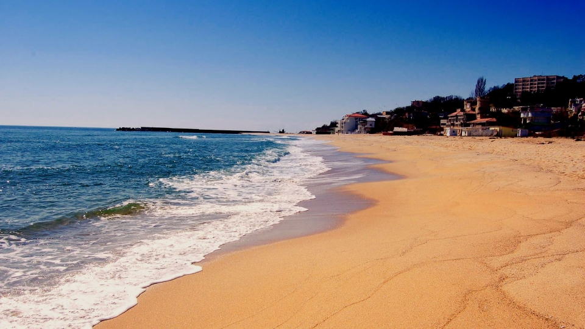

6 motive ca să-ți petreci vacanța la Nisipurile de Aur!
Plaja din stațiune este cunoscută ca fiind una dintre cele mai bune plaje de nisip din Europa. Este plată, acoperită cu nisip fin și auriu, iar în mare sunt pante ușoare de nisip și nu există pietre. Apa este curată și de obicei liniștită, ideală pentru scufundări și vacanțe cu copii;
Majoritatea hotelurilor oferă servicii All Inclusive sau Ultra All Inclusive de la cele de două până la cele de cinci stele. Multe dintre hoteluri au fost preluate de mari concernuri turistice internaționale (în special din Germania, Franța și Turcia) și oferă servicii similare celor din marile stațiuni litorale din lume. De exemplu în hotelurile de 3-5 stele vă puteți bucura de piscină, baruri, bar la piscină, masaj etc;
Atracțiile turistice nu se opresc doar la plajă și calitatea serviciilor, în apropiere găsim și atracții culturale și istorice precum: Castelul din Balcic (fosta reședință a Reginei Maria și grădina botanică), Muzeul Istoric, Muzeul Etnografic (care surprinde atmosfera intimă a satelor și orașelor la sfârșitul secolului XIX), Galeria de Artă din sudul orașului Dobrudza și multe alte monumente și locuri istorice ce pot fi vizitate;
În stațiune ne putem relaxa atât pe plajă cât și în multitudinea de spații verzi amenajate, pietonale pline de copaci umbroși, terase, restaurante, cafenele și cluburi aflate pe plajă sau în imediata apropiere. Așadar putem alege între o zi pe plajă și o zi la umbra copacilor din zonele pietonale;
Și nu în ultimul rând, unul din principalele motivele pentru care vrei să-ți petreci vacanța la Nisipurile de Aur este raportul calitate-preț foarte bun. Având în vedere serviciile oferite similare celor din marile stațiuni litorale din lume, prețul unui sejur de 7 zile pentru două persoane începe de la 215 Euro la un hotel de 3 stele. Însă pe DirectBooking.ro găsești chiar și mai ieftin, datorită reducerilor Early Booking de care poți profita chiar acum.
Stațiunea Nisipurile de Aur este o alegere excelentă pentru o vacanță pe litoral cu familia, sau dacă ești genul care petrece ziua pe plajă și noaptea în club, aici găsești tot ce ai nevoie pentru o vacanță perfectă la prețuri foarte accesibile.